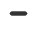
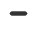

UNESCO
Global Geopark (UGGp) di Indonesia
Informasi Persebaran UGGp di Indonesia dan Rutenya
Informasi Persebaran UGGp di Indonesia dan Rutenya
Wilayah geografi yang di dalamnya terdapat situs warisan geologi (geosite) dan bentang alam yang bernilai terkait aspek :
1. Warisan geologi (geoheritage)
2. Keragaman geologi (geodiversity)
3. Keanekaragaman hayati (biodiversity)
4. Keragaman budaya (cultural-diversity)
Warisan bumi bertaraf internasional untuk investasi pembangunan penduduk asli secara berkelanjutan dengan dasar konservasi edukasi.
Fungsi :
1. Konservasi / Perlindungan
2. Edukasi / Pendidikan
3. Pembangunan Berkelanjutan
Di Indonesia sendiri, terdapat 10 Geopark yang menjadi bagian dari UNESCO Global Geopark (UGGp)
Untuk melihat peta persebaran UGGp dan Rutenya, klik tombol "Peta" di bawah ini
 , zoom out , dan reset bearing to north untuk mengatur posisi peta.
, zoom out , dan reset bearing to north untuk mengatur posisi peta.Berikut informasi bandar udara terdekat dan pemesanan tiket pesawat menuju masing - masing UGGp
Untuk melihat informasi mengenai akomodasi, fasilitas, biaya, dan lainnya dapat dilihat melalui website masing - masing UGGp atau klik pada tombol "Detail" dan untuk melihat rute menuju masing - masing geopark klik tombol "Rute" di bawah ini

Mencakup dua kaldera vulkanik dengan dinding kaldera luar seluas 370,5 km2 yang mengelilingi kaldera dalam, Gunung Batur, dan Danau. Terdapat pemandangan lanskap indah yang berasal dari kaldera tua (luar) dan muda (dalam) yang terbentuk dari letusan dahsyat 29.000 tahun yang lalu. Merupakan komponen penting "cincin api pasifik" dengan flora, fauna endemik dan budaya asli agama Hindu Bali.

Dikenal sebagai kawasan karst tropik yang terhampar dari Gunung Kidul DIY hingga Pacitan Jawa Timur dengan luas 1500km. Memiliki keragaman geosite, salah satunya adalah Situs Gunung Api Purba Nglanggeran yang disekitar pegunungannya terdapat mata air indah yang keluar dari celah batuan.

Bertitik pusat di Gunung Rinjani sebagai gunung tertinggi kedua di Indonesia yang memiliki ketinggian mencapai 3.726 mdpl. Kawah Rinjani yang disebut juga Segara Muncar yang merupakan sebuah kaldera indah, juga terdapat Danau Segara Anak yang terbentuk dari proses vulkanis dengan air yang biru jernih.

Geopark dengan konsep pariwisata berkelanjutan dan konservasi darat hingga laut dengan berbagai macam keragaman geologi, flora, fauna, hingga wisata budaya. Keindahan alam yang beragam, salah satunya Curug Puncak Manik yang memiliki ketinggian mencapai 100m dengan pancuran air terjun yang jernih. Juga terdapat curug lainnya seperti Cikaso, Awang, dan Cigangsa

Kaldera yang terbentuk dari amblasan (collapse) pasca erupsi supervulcano gunung api Toba purba yang kemudian menjadi kaldera volcano-tektonik (kawah gunung api raksasa) dan terisi oleh air hujan. Beberapa Geosite yang ada di Kaldera Toba meliputi Hutatinggi-Sidohini, Haranggaol, Parapat, Hutaginjang, Hutan Eden, Batak Museum, dan Sipinsur

Geopark Belitong memiliki tiga warisan geologi yang bernilai yaitu batu satam (batu yang terbentuk dari tabrakan meteor dengan lapisan bumi dengan kandungan timah yang tinggi), batuan granit, dan warisan sejarah tambang timah. Selain itu juga terdapat berbagai macam keanekaragaman flora dan fauna. Sampai saat ini terdapat 17 geosite yang ada di dalam Kawasan Geopark Belitong

Kawasan geopark ini memiliki keragaman geologi beupa ijen blue fire, kawah wurung, danau asam, lava blawan, dan lainnya. Terdapat 21 situs geologi yang dikembangkan, mulai dari skala lokal hingga skala internasional. Salah satu dari banyak situs geologi yang mempunyai fenomena luar biasa adalah Kawah Ijen, danau kawah paling asam di bumi dengan api biru yang muncul di daerah Solfatara. Keragaman biologi didalamnya terdapat hutan pelangi dan kopi bondowoso, serta keragaman budaya seperti tari petik kopi.

Dijuluki dengan sebutan "The Land Of Tomorow". Di kawasan geopark ini terdapat berbagai wisata alam berbasis geodiversity, geoheritage, dan biodiversity. Terdapat 26 geosite unggulan diantaranya gua batu, air terjun bantimurang, desa malaka, hutan amarani, dan lainnya. Juga terdapat keragaman flora, fauna, dan budaya.

Kawasan geopark ini memiliki keberagaman geologi disepanjang aliran Sungai Merangin, serta keragaman flora dan fauna yang juga terekam sebagai fosil purba sekitar 250 – 290 juta tahun yang lalu yang tersebar di 15 objek wisata di Geopark Merangin. Beberapa diantaranya adalah mata air panas Nilo Sungsang, Air terjun sungai hitam, air terjun segerincing, danau telago biru, danau kawah kumbang, goa sengayau, dan fosil - fosil seperti fosil tuff, fosil daun, dan fosil kayu.

Dijuluki dengan sebutan "Zamrud Karst Katulistiwa". Kawasan ini berupa gugusan kepulauan karst dan batuan tua yang berusia 439 – 360 juta tahun yang lalu. Di kawasan ini juga terdapat megabiodiversitas, geoheritage, dan warisan budaya yang beragam. Beberapa diantaranya seperti karst of piaynemo, pulau kelelawar, karst of wayag, danau ubur- ubur, dan mansuar.